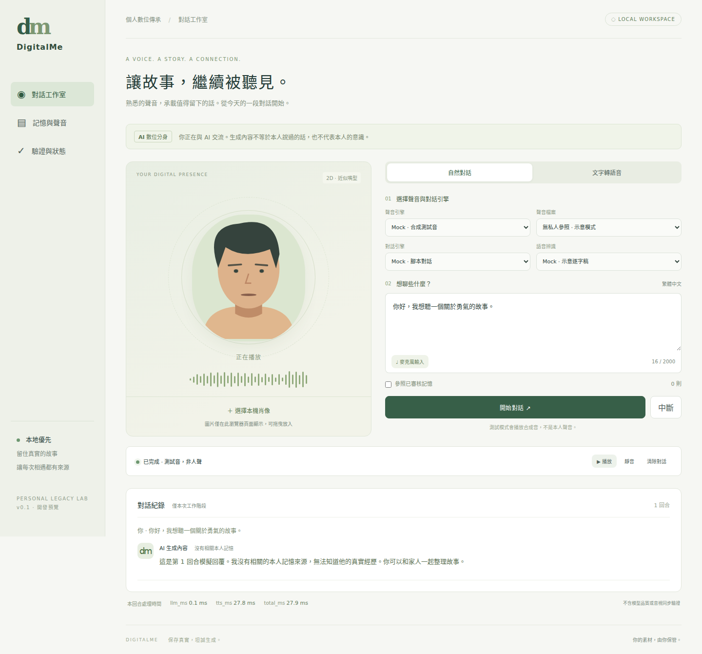

DIGITALME / OBSERVED EVIDENCE功能可操作，驗證有界線。
此看板由原始測試輸出計算。全部語音與對話效能數據來自 Linux mock 合成測試音，不是爸爸聲音、Mac 實測或真實對嘴。Mac／聲音品質／長期家庭使用尚未驗收。
來源 commit：ebf69681fea995b353505620cf1f4a8c9ba8e641（工作樹改動另記於 smoke.json）
測試時間：2026-10-14T01:08:23.289248+00:00
環境：{'os': 'Linux', 'arch': 'x86_64', 'python': '3.12.14'}
python_passed28
python_total28
browser_passed9
browser_total9
tts_passed10
tts_total10
dialogue_passed20
dialogue_total20
mock_p50_ms25.557000000000002
privacy_scanTrue
npm_vulnerabilities0
python_vulnerabilities0
需求 ↔ 測試 ↔ 證據
| ID | 狀態 | 已測與缺口 | 重跑指令 | 原始輸出 |
|---|
| AC-01 | PARTIAL | Mock PCM WAV verified; real Chinese cloned speech unverified | make smoke; make test | smoke.json |
| AC-02 | UNVERIFIED | 3 voice references / family blind quality rating require Mac and consent | Mac voice comparison | — |
| AC-03 | PARTIAL | 20 mock turns; real owner-voice natural dialogue unverified | make smoke; npm run e2e | smoke.json |
| AC-04 | PARTIAL | Browser RMS movement and playable audio; no measured A/V offset | npm run e2e | browser-tests.json |
| AC-05 | PARTIAL | Injected failure, timeout, retry; real model process-stop recovery unverified | make test; npm run e2e | python-tests.xml |
| AC-06 | PARTIAL | Permission rejection simulated in browser; physical Mac permission unverified | npm run e2e | browser-tests.json |
| AC-07 | PARTIAL | Mock no-source disclosure and retrieval; live LLM hallucination red-team unverified | make test | python-tests.xml |
| AC-08 | PARTIAL | Local voice/memory/session deletion; encrypted backups/secure erasure not implemented | make test; npm run e2e | python-tests.xml |
| AC-09 | PASS | Index pattern scan; only synthetic evidence allowed; heuristic scope | make scan | privacy-scan.json |
| AC-10 | PARTIAL | Lockfiles, build and smoke tested; Mac clean clone not tested | make setup test smoke | python-tests.xml |
20 回合時間線（Mock）
0140.5 ms · LLM 0.0 / TTS 40.5
0247.9 ms · LLM 0.0 / TTS 47.9
0324.0 ms · LLM 0.0 / TTS 24.0
0425.6 ms · LLM 0.0 / TTS 25.6
0525.8 ms · LLM 0.0 / TTS 25.8
0628.4 ms · LLM 0.6 / TTS 27.8
0723.3 ms · LLM 0.0 / TTS 23.3
0826.0 ms · LLM 0.0 / TTS 26.0
0922.4 ms · LLM 0.0 / TTS 22.4
1023.5 ms · LLM 0.0 / TTS 23.5
1129.1 ms · LLM 0.0 / TTS 29.1
1225.9 ms · LLM 0.0 / TTS 25.9
1324.3 ms · LLM 0.0 / TTS 24.3
1424.6 ms · LLM 0.0 / TTS 24.5
1522.9 ms · LLM 0.0 / TTS 22.9
1625.5 ms · LLM 0.0 / TTS 25.5
1723.3 ms · LLM 0.0 / TTS 23.3
1825.6 ms · LLM 0.0 / TTS 25.6
1926.4 ms · LLM 0.0 / TTS 26.4
2021.4 ms · LLM 0.0 / TTS 21.4
LLM/TTS 計時不含麥克風、STT、網路和第一個可聽聲音時間；不作 ≤5 秒真機門檻證據。
瀏覽器畫面（合成頭像）

待機畫面 · 手機排版 · 數據與 SHA256 manifest
待驗證與未實作
- Mac 舊環境盤點、真實 XTTS／MLX／Whisper、雲端或本地 LLM 推論
- 真實音質、冷啟動、峰值記憶體、ASR 正確率、音視偏差
- macOS 透明置頂視窗、精確嘴型、監護人權限、加密備份還原